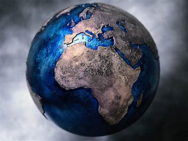

A Geografia é uma ciência social e natural que se dedica ao estudo da Terra e dos fenômenos que ocorrem em sua superfície, abordando as características físicas e humanas do planeta e as relações entre esses elementos. Ela busca compreender a distribuição e a organização dos fenômenos naturais, como relevo, clima, vegetação e hidrografia, bem como as atividades humanas, como a urbanização, a economia, a cultura e as relações políticas e sociais. A Geografia analisa como o ambiente e as sociedades interagem e se influenciam mutuamente, além de examinar as transformações do espaço ao longo do tempo.
Geografia é fundamental para entender a organização do território, o uso dos recursos naturais, o desenvolvimento das cidades, as dinâmicas demográficas, os processos de globalização e as questões ambientais. Ela estuda como os seres humanos ocupam e modificam o espaço, explorando desde a distribuição da população até as redes de transporte e comunicação. Além disso, a Geografia também está envolvida em temas como o planejamento urbano, as mudanças climáticas, a sustentabilidade e os impactos da ação humana sobre o meio ambiente.
A Geografia é uma ciência que foi construída, ou desconstruída, ao longo dos anos. Isso ocorreu pelo fato de que, ao longo do tempo, essa ciência passou por diversas alterações em relação às correntes filosóficas e aos processos históricos vividos pelas sociedades. Ao longo de toda essa transformação, os conceitos-chaves que norteavam o estudo da Geografia renovaram-se, alterando a abrangência dessa área de estudo. Região, território, lugar, paisagem e espaço são os principais conceitos-chaves que fizeram parte dessa (des)construção.
Geografia ficou conhecida como Geografia Tradicional do período que se estendeu de 1870, quando essa ciência foi institucionalizada nas universidades europeias, até 1950. Nesse período, foram privilegiados os conceitos “região” e “paisagem” como objeto de estudo da Geografia. Portanto, o espaço, nesse momento, não era um conceito-chave para o estudo geográfico.
Em meados dos anos 50, no período pós-guerra, no qual o mundo experimentava o aparecimento de diversos avanços tecnológicos, surgiu uma nova geografia. Nesse período, o conceito-chave “espaço” passou a orientar o pensamento geográfico. Todo o estudo geográfico anterior a essa época pregava a neutralidade, sem se preocupar com os problemas sociais, pois acreditavam que esses problemas não deveriam ser estudados por geógrafos.
Surgiu, então, o que ficou conhecido como Geografia Crítica, que acreditava que os geógrafos deveriam engajar-se politicamente, ou seja, não desvincular a produção científica do contexto histórico. O espaço, então, passou a ser visto como espaço social, no qual se estabelecem as relações entre a sociedade e o meio. O principal representante dessa corrente filosófica no Brasil foi o geógrafo Milton Santos.
As correntes da Geografia conhecidas como Humanista e Cultural surgiram nesse mesmo período, contudo, apresentaram uma nova noção de espaço: o espaço vivido, no qual se destacam as experiências vividas e os aspectos subjetivos. Assim, o conceito-chave deixou de ser “espaço” e tornou-se “lugar”. O lugar representa, então, a subjetividade, as experiências, o cotidiano, a ligação da sociedade com o meio por meio do simbólico.
A Geografia estuda o espaço geográfico, ou seja, todo o espaço terrestre produzido pelo homem ou que possui direta ou indireta relação com este. Sendo assim, o estudo das sociedades urbana e rural, o uso e apropriação dos recursos naturais e as dinâmicas naturais fazem parte dos estudos geográficos. A geografia divide-se em vários ramos, entre os quais se destacam,abaixo:
A importância da Geografia está relacionada à necessidade de se conhecer o espaço geográfico e este pode ser entendido como o espaço produzido pelo homem e que está em constante transformação ao longo do tempo. Podemos dizer, então, que o espaço geográfico possui um caráter histórico e, por isso, é capaz de contar a história e as características da ação humana sobre o meio em que vive.
Entretanto, ela não está somente nos conhecimentos sobre os nomes de países, suas capitais, dados populacionais etc., mas também em explicar a dinâmica das ações no espaço, que não desvinculam do tempo. Por exemplo: a dinâmica da transformação dos espaços na cidade, a lógica da produção agrária, a distribuição dos movimentos sociais, a estrutura geomorfológica superficial da Terra, entre outros.
Sim, existem jogos de geografia, que podem ser empregados no ensino de Geografia como um caminho de didatização dos conteúdos geográficos, pois são capazes de contribuir para a articulação da teoria e da prática no desenvolvimento do raciocínio geográfico no aluno.